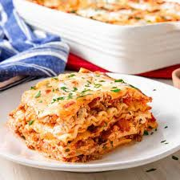

Lasagna

The Best Homemade Lasagna
Lasagna is one of the best dishes. It is easy to make, freezes well and reheats perfectly. Its a good meal to serve to guests and is quite filling.
Ingredients
- ground beef
- tomato sauce
- tomato paste
- crushed tomatoes
- shredded mozzarella
- noodles(optional)
- ricotta
STEPS:
- Start by making the sauce with ground beef, bell peppers, onions, and a combo of tomato sauce, tomato paste, and crushed tomatoes. The three kinds of tomatoes gives the sauce great depth of flavor.
- Let this simmer while you boil the noodles and get the cheeses ready. We're using ricotta, shredded mozzarella, and parmesan -- like the mix of tomatoes, this 3-cheese blend gives the lasagna great flavor!
- From there, it's just an assembly job. A cup of meat sauce, a layer of noodles, more sauce, followed by a layer of cheese. Repeat until you have three layers and have used up all the ingredients.
- Bake until bubbly and you're ready to eat!